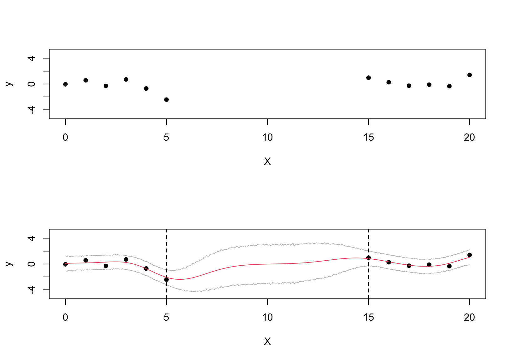
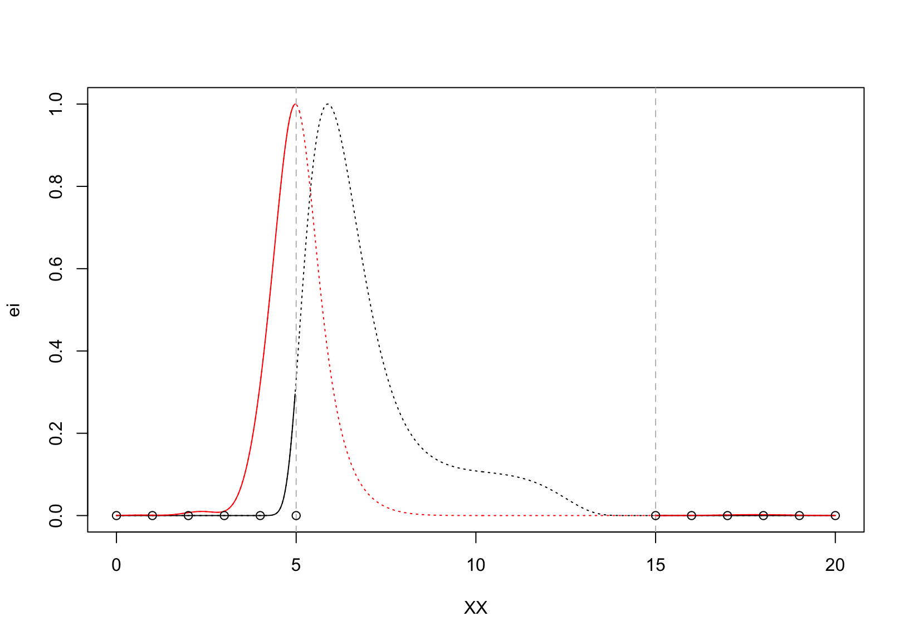

if(!library(pacman, logical.return = TRUE)) install.packages("pacman")
pacman::p_load(laGP, tidyverse, plotly, plgp, randomForest)Constraint Bayesian Optimization (CBO)
Returning to the setting where our interest lies in finding \[ \hat{x} = \arg\min_{x \in \mathcal X} f(x). \]
Sometimes, the domain \(\mathcal X\), in practice, could not access but \(\mathcal X_s \subset \mathcal X\). We then have an constraint \(c(x)\), which, for simplicity, is assumed binary. Thus, the optimization is now \[ \hat x = \arg\min_{x \in \mathcal X} f(x), \quad \text{ s.t } c(x) \le 0. \]
In this setting, the optimization requires a new acquisition function instead of EI, which reflects both \(f(x)\) and the constraint \(c(x)\). What was introduced by Gramacy et al.1 is the expected feasible improvement (EFI): \[ EFI(x) = \mathbb{E}[I(x)]\boldsymbol{1}_{c(x) \le 0}(x), \] or the integrated expected conditional improvement (IECI) \[ IECI(x_{n+1}) = - \int_{\mathcal X} \mathbb E[I(x \vert x_{n+1})]\boldsymbol{1}_{c(x) \le 0}(x)dx = -\int_{\mathcal X_s \doteq \{x: c(x) \le 0\}} \mathbb E[I(x \vert x_{n+1})] dx, \] where \(p(x) = \mathcal{U}\{\mathcal X_s\}\). We illustrate it below.
1. Gramacy RB. Surrogates: Gaussian process modeling, design, and optimization for the applied sciences. Chapman; Hall/CRC; 2020.
1 Known constraint
# data
set.seed(1111)
X = seq(0,20, 1)|> {\(i) i[i<=5 | i >=15] }()|> as.matrix()
fx = function(x){ as.matrix(sin(x) - 2.55*dnorm(x,1.6,0.45)) }
y = fx(X) + rnorm(nrow(X), sd = 0.5)
par(mfrow = c(2,1))
plot(X, y, pch = 16, ylim = c(-5,5))
## fit GP
fitGP = newGP(X, y, d = 5, g = 0.1*var(y))
XX = seq(0,20, length.out = 500)|> as.matrix()
pred_gp = predGP(fitGP, XX)
ci<- mvnfast::rmvn(10000, pred_gp$mean|> as.matrix(), pred_gp$Sigma)|>
apply(2, HDInterval::hdi)|>
t()
plot(X, y, pch = 16, ylim = c(-5,5))
matplot(XX, cbind(pred_gp$mean, lower = ci[,1], upper = ci[,2]), type = "l", col = c(2,"gray","gray"), add = T, lty = 1)
abline(v = c(5,15), lty = 2)
# calculate EI
fmin = predGP(fitGP, X)$mean|> min()
pred_GP = predGP(fitGP, XX, nonug = TRUE, lite = T)
d = fmin - pred_GP$mean
sig_GP = sqrt(pred_GP$s2)
dn = d/sig_GP
ei = d*pnorm(dn) + sig_GP*dnorm(dn)
ei = scale(ei, min(ei), max(ei)- min(ei))
# get reference ei, ieci and XX
lc = 5; rc = 15
eiref = ei[XX <= lc | XX >= rc]|> as.matrix()
XXref = XX[XX <= lc | XX >= rc,]|> as.matrix()
ieci = ieciGP(fitGP, XX, fmin, Xref = XXref, nonug = T)
ieci = scale(ieci, min(ieci), max(ieci) - min(ieci))
par(mfrow = c(1,1))
plot(XX, ei, type = "l", lty = 3)
lines(XX[XX <= lc,], ei[XX <= lc,])
lines(XX[XX >= rc,], ei[XX >= rc,])
abline(v = c(lc, rc), lty = 2, col = "gray")
lines(XX, 1 - ieci, col = "red", lty = 3)
lines(XX[XX <= lc,], (1-ieci)[XX <= lc,], col = "red")
lines(XX[XX >= rc,], (1-ieci)[XX >= rc,], col = "red")
points(X[X <= lc,], rep(0,sum(X<=lc)))
points(X[X >= rc,], rep(0,sum(X >=rc)))
2 Blackbox binary constraint
X = seq(0,20, 1)|> {\(i) c(i[i<=5 | i >=15], 8,12) }()|>
sort()|>
as.matrix()
y = fx(X)+ rnorm(nrow(X), sd = 0.5)
const = as.numeric(X> lc & X < rc)
fit_dat = newGP(X, y, d = 1, g = 0.1*var(y), dK = T)
cfit = randomForest(X, factor(const))
X_v = X[const==0,,drop = F]
fmin = predGP(fit_dat, X_v, lite = TRUE)$mean|> mean()
prop = predict(cfit, XX, type = "prob")[,1]